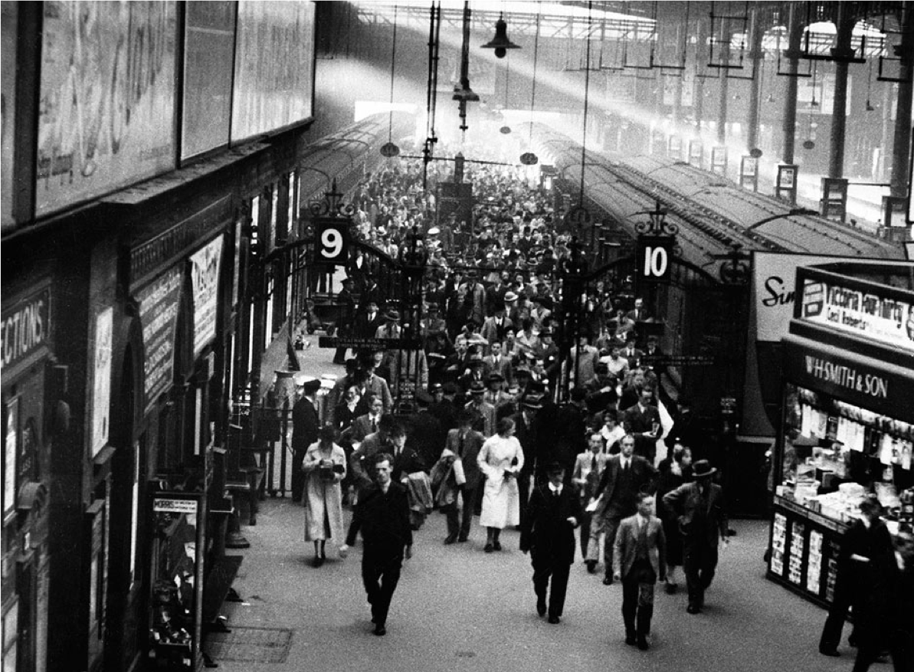
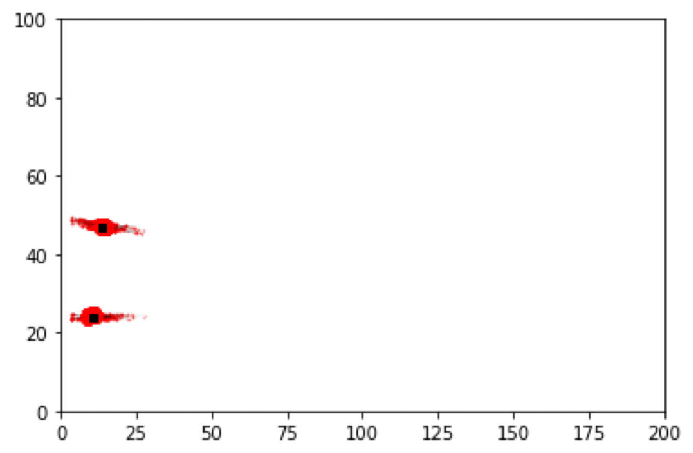

Artificial Intelligence for Cities
17th June, University of Leeds
Dynamic Simulation Models and Digital Twins of Urban Systems
Nick Malleson
Professor of Spatial Science
School of Geography, University of Leeds
and Fellow of the Alan Turing Institute
These slides:
http://dust.leeds.ac.uk
How many people are there in Trafalgar Square right now?
We need to better understand urban flows:
Crime – how many possible victims?
Pollution – who is being exposed? Where are the hotspots?
Economy – can we attract more people to our city centre?
Health - can we encourage more active travel?
Agent-Based Modelling of Urban Flows
ABM: Model the (synthetic) individuals whose behaviour drives the system
But: models predict near future well, but diverge over time.
Solution: Data Assimilation (?)
Try to improve estimates of the true system state by combining:
Noisy, real-world observations
Model estimates of the system state
First Experiments: Modelling Crowds
Crowd Simulation with a Particle Filter
Crowd Simulation with a Particle Filter
Modelling Bus Routes in Real Time
Ethical Implications
Data Bias
Need to be very careful: biased data -> biased models
The digital divide
Tracking People
Advantage with these methods is we don't need to track people
Models work with counts of flows
Towards Digital Twins of Human Systems
Join up simulations at multiple spatial and temporal resolutions
Simulations of traffic and crows in real time
Predictions of longer-term changes (e.g. new roads, trains, etc.)
Models of long term demographic change (migration, ageing, birth, etc.)
Real-time analysis tools and sandpits for policy development
The Alan Turing Institute
National Institute for Data Science and Artificial Intelligence
Aim: make great leaps in research in order to change the world for the better.
Training the next generation of leaders, shaping the public conversation, and pushing the boundaries of these sciences for the public good
Urban Analytics Programme
Cities are the home to the majority of the world's population
They drive economic growth, wealth creation, social interaction, well-being
But also: inequalities in health, affluence, education and lifestyle
Programme aim: Develop data science and AI focused on the process, structure, interactions and evolution of agents, technology and infrastructure within and between cities.
For more information:
www.turing.ac.uk/research/research-programmes/urban-analytics
For more information about what we're doing
Data Assimilation for Agent-Based Models (dust)
Main aim: create new methods for dynamically assimilating data into agent-based models.
Uncertainty in agent-based models for smart city forecasts
Developing methods that can be used to better understand uncertainty in individual-level models of cities
Bringing the Social City to the Smart City
https://alisonheppenstall.co.uk/research/bringing-the-social-city-to-the-smart-city/
Now Recruiting:
Simulating Urban Systems
Post-doctoral Research Fellow (grade 7)
Full time, 3 years
Application deadline: July 2019